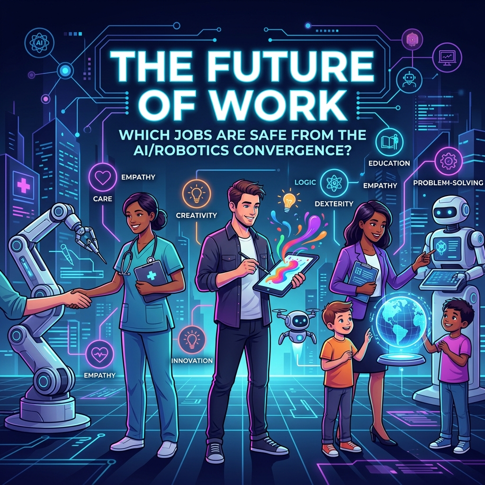

The Future of Work: Which jobs are safe from the AI/Robotics convergence?
While some jobs are at risk of automation, human qualities like empathy, creativity, and dexterity ensure others remain safe.

The convergence of AI and robotics is reshaping the workforce, but uniquely human skills remain our strongest asset.
The future of work is undergoing a significant transformation due to the convergence of AI and robotics. While some jobs are at risk of being automated, others are safe due to the human skills and qualities they require. According to a report by the McKinsey Global Institute, jobs that require human skills such as social skills, emotional intelligence, and creativity are less likely to be automated. 🌐
Jobs Built on Human Skills
Some of the jobs that are considered safe from AI and robotics convergence include:
- Healthcare professionals: Nurses, doctors, and other healthcare professionals require human skills such as empathy, communication, and problem-solving, making them less likely to be automated. 🩺
- Teachers and educators: Teaching requires human skills such as empathy, patience, and creativity, making it a job that is unlikely to be automated. 📚
- Artists and creatives: Jobs that require creativity, imagination, and originality, such as artists, writers, and musicians, are less likely to be automated. 🎨
- Skilled tradespeople: Jobs that require manual dexterity, problem-solving, and critical thinking, such as electricians, plumbers, and carpenters, are less likely to be automated. 🛠️
Conclusion: Adaptation is Key
In conclusion, while some jobs are at risk of being automated due to the convergence of AI and robotics, others are safe due to the human skills and qualities they require. It's essential to note that even in jobs that are less likely to be automated, there may still be some tasks that can be automated, and workers will need to develop new skills to work alongside AI and robotics. 🤝
Sources
- "A future that works: Automation, employment, and productivity" - McKinsey Global Institute
- "The Future of Healthcare: How AI and Robotics Are Transforming the Industry" - HealthTech Magazine
- "The Role of Teachers in the Age of Automation" - Education Week
- "The Creative Economy: How AI and Robotics Are Changing the Arts" - Artsy
- "The Future of Skilled Trades: How AI and Robotics Are Transforming the Industry" - Construction Business Owner